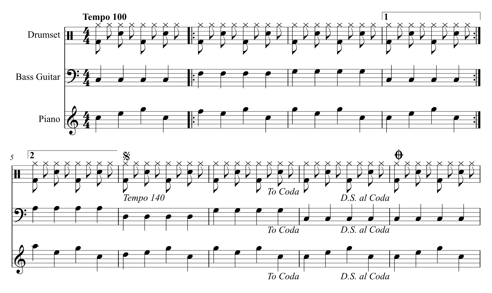
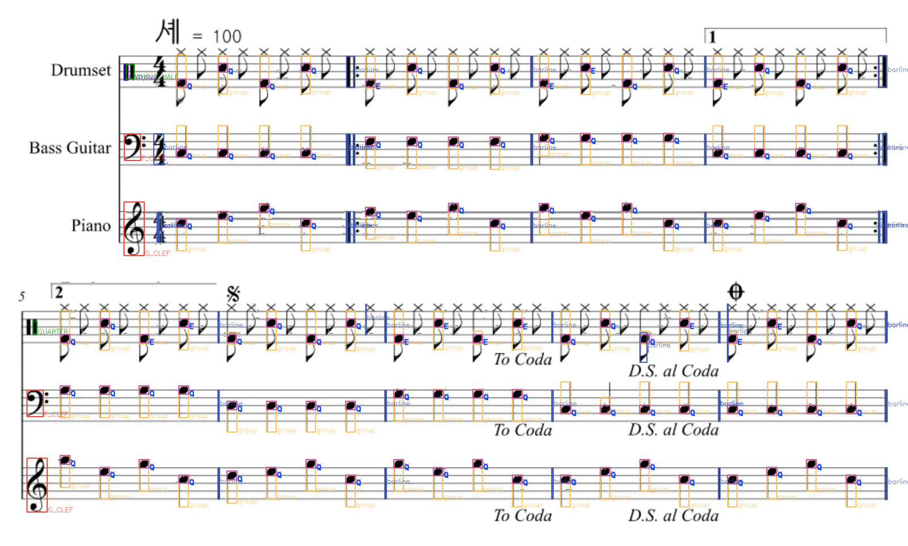

드럼 파트는 BE가 지금 받는 채보 JSON으로, 나머지 악기는 반주 음원으로 바꿔 봤음. 사진·스캔 PDF는 공개 OMR 도구로 시험했는데 드럼 기보를 읽지 못했음.
validate_chart 통과.드럼·베이스·피아노 3파트, 9마디짜리 시험용 악보임. 도돌이표, 1·2번 괄호, 중간 템포 변경 100→140, D.S. al Coda를 일부러 다 넣었음. 재생하면 아래 레인에 채보 JSON의 노트가 그 시각에 지나감.

timeMs를 만듦.midi-unpitched GM 번호 → 지금 쓰는 GM→패드 대응표. HIHAT_PEDAL은 BE가 받는 8종에 맞춰 HIHAT으로 합침.build_chart·validate_chart를 그대로 씀. BE는 지금처럼 3난이도로 나눠 저장하면 됨.{
"schemaVersion": 1,
"generator": "ADT_MODEL",
"generatorVersion": "MUSICXML-test",
"metrics": { "transcribeMs": 2, "durationMs": 27086 },
"charts": [{
"difficulty": "NORMAL",
"notationStatus": "UNAVAILABLE",
"notes": [
{ "noteId": "n0001", "timeMs": 0, "pad": "KICK", "velocityHint": 90 },
{ "noteId": "n0002", "timeMs": 0, "pad": "HIHAT", "velocityHint": 90 },
{ "noteId": "n0003", "timeMs": 300, "pad": "HIHAT", "velocityHint": 90 },
{ "noteId": "n0004", "timeMs": 600, "pad": "SNARE", "velocityHint": 90 },
…
],
"timing": { "bpm": 100.0, "offsetMs": 0, "timeSignature": "4/4" }
}]
}MuseScore·Finale 등에서 내보낸 공개 파일로 돌렸음. 5개 모두 음표마다 악기 id와 GM 번호가 들어 있었음. 버린 노트는 대부분 우리 패드에 없는 타악기임.
| 파일 | 만든 프로그램 | 드럼 음표 | 채보 노트 | 빠진 노트 |
|---|---|---|---|---|
| drums-basic-groove | BandBuddy | 24 | 24 | 없음 템포 65에서 8분 하이햇 간격 462ms, 계산값과 같음 |
| drum_sample | Finale 27 | 36 | 28 | 카우벨 8개 패드에 없는 악기 |
| testDrumset1 | MuseScore 0.7 | 8 | 4 | GM 35·41 각 1개, 콩가 2개 35 Acoustic Bass Drum·41 Low Floor Tom은 대응표에 추가하면 됨 |
| testDrumset2 | MuseScore 0.7 | 12 | 6 | GM 35 1개, 콩가 5개 |
| baiao-miranda | MuseScore 4.3 | 48 | 8 | 트라이앵글 등 40개 브라질 타악기 악보라 드럼 세트가 아님 |
위 시험 악보를 그대로 그린 이미지를 oemer에 넣었음. 스캔이나 사진이 아니라 가장 깨끗한 디지털 악보인데도 결과가 아래와 같았음.

.musicxml·.xml, 압축본 .mxltimeMs는 맞지만 timing.bpm에는 첫 템포 하나만 들어감